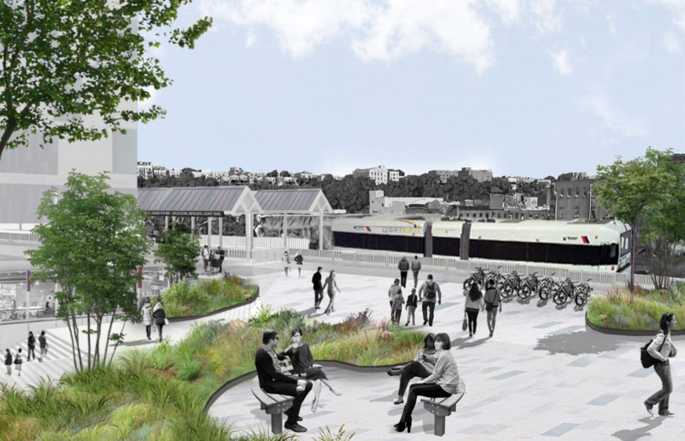
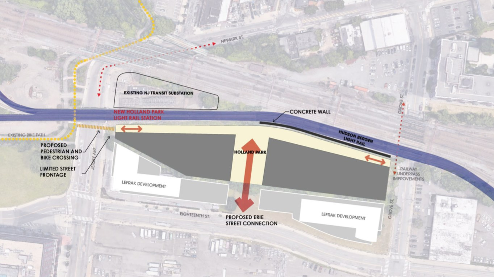
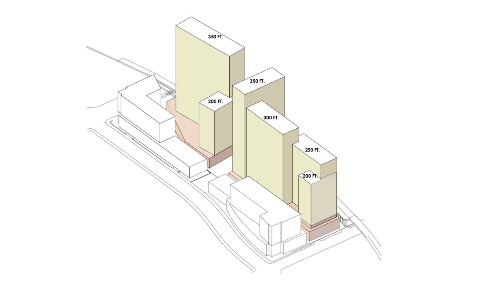
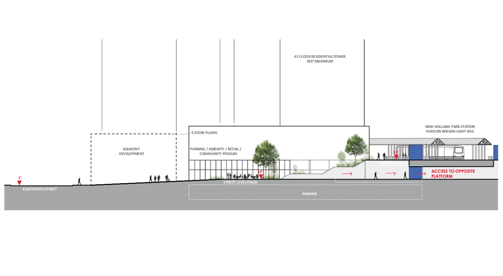
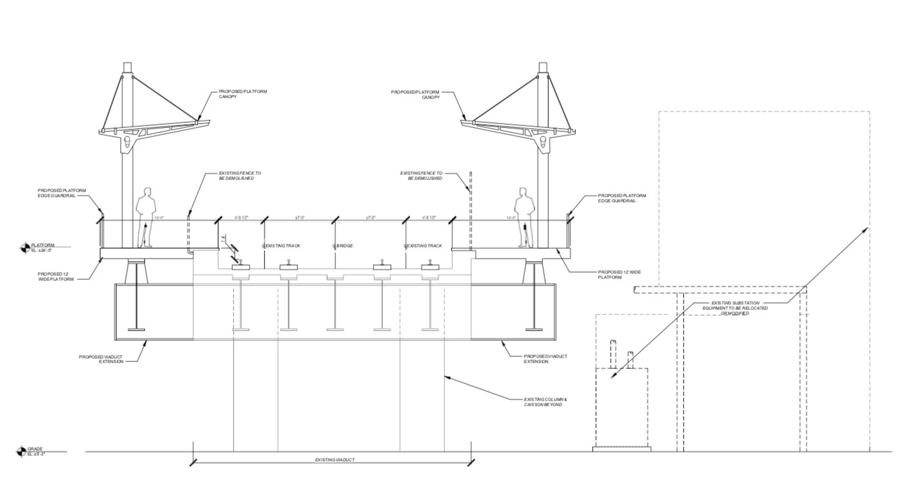
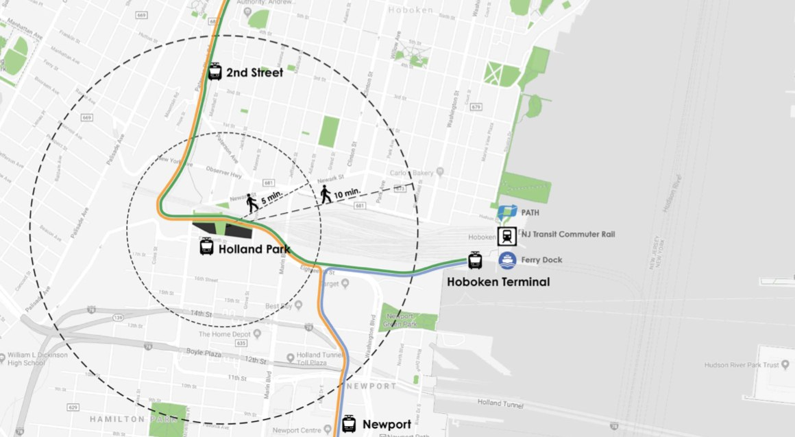

Jersey City · Hoboken line · 18th Street & Jersey Avenue
Holland Park
A new connected district between Jersey City and Hoboken.
Lincoln Equities Group Presented by SERHANT.

Holland Park · Plaza & light rail
01 · The vision
A neighborhood arrives between two cities.
Lincoln Equities is building the connection, not just the address: two buildings either side of a public plaza, with a light rail station funded by the developer landing straight into it.
800Residences proposed
2Buildings, one plaza
1New station, developer funded
4Storey retail podium
Retail street & terraces
02 · The public realm
You do not move into a building here. You move into the neighborhood it created.
Cafés with tables outside, shade, steps, planting, a reason to stop. Districts are made at eye level, and this one is drawn to be used before it is admired.
03 · The plan — as filed with the city

Site plan · Connections

Massing study

Section · Podium to platform

Platform elevation
A pedestrian and bike crossing north, an Erie Street connection south, and a station in the middle. The drawings describe movement first and units second.
04 · Resident experience
A day that never needs a car.
08:10 · The steps
09:45 · The corner table
18:30 · The platform
Step out, cross the plaza, board the light rail. Come home to a street that is busy in the right way.
Aerial · Jersey City · Hoboken border

05 · The district
A station of its own, on the line between two cities.
Holland Park stationProposed · on site
On site
2nd StreetHoboken · light rail
10 min walk
Hoboken TerminalPATH · NJ Transit · ferry
Up the line
NewportPATH · waterfront retail
Down the line
Walk radii as drawn on the project's own transit plan
06 · The neighborhood, and what it already earns
The best operators in Hudson County are already here, and the rents are already proven.
01
Hudson House East315 15th Street
RXR · Columbia Property Trust
$3,605Asking from
02
Radio Lofts316 15th Street
RXR · Columbia Property Trust
$3,365Asking from
03
Soho Lofts273 16th Street
Manhattan Building Co · Veris
$3,330Asking from
04
Cast Iron Lofts837 Jersey Avenue
The Manhattan Building Company
$3,158Asking from
05
Embankment House270 10th Street
Newport Associates
$2,820Asking from
06
Hudson House West325 15th Street
RXR · Columbia Property Trust
$2,695Asking from
Every one of these was earned without a station at the door · Publicly advertised asking rents, September 2026
On site · Ideation, construction, sales gallery
07 · Why SERHANT.
Hard hats before headlines.
Strategy workshops, site walks, sales galleries and brand identities, built for luxury projects from the ground up.
6Years, founded September 2020
$10B+New development inventory
16B+Impressions a year
10M+Audience on day one
08 · Buildings SERHANT. New Development is taking to market now
01
One Williamsburg WharfEast River waterfront
Naftali · Brandon Haw Architecture
Brooklyn
02
Mandarin Oriental, Fifth AvenueMidtown
Branded residences
Manhattan
03
Brooklyn PointDowntown Brooklyn
Extell · Kohn Pedersen Fox
Brooklyn
04
Quay TowerBrooklyn Bridge Park
ODA · Marmol Radziner
Brooklyn
05
200 AmsterdamUpper West Side
Elkus Manfredi · CetraRuddy
Manhattan
06
ParagonLong Island City waterfront
Waterfront and transit-led
Queens
07
Mercedes-Benz PlacesDowntown Miami
Branded residences
Miami
Licensed in New Jersey, with a SERHANT. team already on this side of the river
09 · What day one looks like
16B+
Impressions a year across the SERHANT. network
10M+
People already following, reachable the morning we launch
Holland Park will never have to buy its first audience. It already has one.
10 · Four teams, one building, one order
01
ID LABPosition
We decide what Holland Park means before anyone decides what it costs.
A brand that says district, not development.
02
SERHANT. STUDIOSProduce
The film, the stills, the social cuts, the site. Made once, made properly.
People in the plaza years before it opens.
03
ADXPublish
Straight into ten million people, then into paid, then into whatever is working.
Every dollar traced to a tour.
04
NEW DEVELOPMENTOpen
Pricing, unit mix, amenity narrative, sales gallery, launch sequencing.
A gallery, a price and a team on site the day leasing opens.